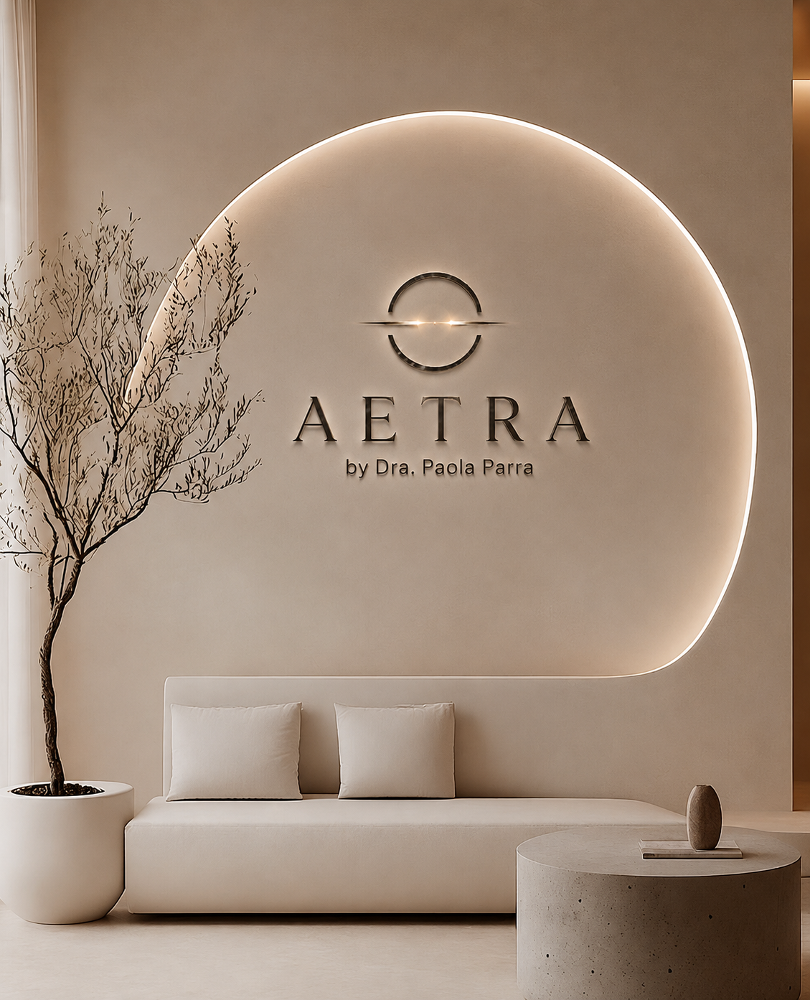

Sutil
Navegación y franjas persistentes.
8 px / 92% · blur / opacidadUN LENGUAJE PARA VIVIR MEJOR
El universo digital de AETRA.
Un sistema donde cada detalle tiene sentido.

Transparencia con profundidad.
Vidrio · luz cálida · equilibrio01 / ESENCIA & DIRECCIÓN
La sofisticación está en la proporción, la pausa y el detalle. Una identidad científica que conserva la calidez de lo humano.
Jerarquías claras, asimetría y espacio para leer.
Datos con contexto. Líneas finas. Información comprensible.
Lenguaje cercano, luz natural y movimiento sereno.
02 / SISTEMA CROMÁTICO
El verde construye la experiencia. El marfil abre la lectura.
El dorado aparece solo donde vale la pena mirar.
Texto: verde sobre marfil. Lectura inversa: marfil sobre verde. El oro profundo sobre marfil se reserva para trazos o titulares grandes; no para texto pequeño.
AaVerde + marfil —AaMarfil + profundo —
03 / TIPOGRAFÍA EDITORIAL
01 / BODONI MODA
AaBb
Conoce tu salud
para vivir mejor.
Titulares, statements, citas y números.
Peso 400. Contraste y ritmo, sin exceso de escala.
02 / MONTSERRAT
Aa Bb Cc
La información cobra sentido cuando puedes entender qué significa para ti.
ABCDEFGHIJKLMNOPQRSTUVWXYZ
abcdefghijklmnopqrstuvwxyz
0123456789 · ¿? ¡! áéíóú ñ
Lectura, navegación, datos e interfaz.
400 regular · 500 medium · 600 semibold.
Solo Bodoni Moda y Montserrat, alojadas localmente. Los tamaños editoriales son fluidos; los textos de lectura mantienen su legibilidad.
04 / GRID, ESPACIADO & GEOMETRÍA
| Viewport | Columnas | Margen | Gap | Sección |
|---|---|---|---|---|
| 390 px | 4 | 24 px | 16 px | 64 px |
| 768 px | 8 | 32 px | 20 px | 64 px |
| 1024 px | 12 | 40 px | 20 px | 80 px |
| 1440 px | 12 | 64 px mín. | 24 px | 96 px |
Contenedor máximo: 1280 px. En tablet, 7/5 y 8/4 se convierten en 5/3; en móvil el orden de lectura se conserva y los bloques ocupan 4/4.
Campos · tablas
Paneles · imágenes
Marcos destacados
Botones · etiquetas
Arcos como encuadre; línea y punto como transición. Un gesto principal por composición. Son recursos de apoyo, nunca sustitutos del logo.
05 / SUPERFICIES & GLASS
Navegación y franjas persistentes.
8 px / 92% · blur / opacidadContexto, información secundaria y datos.
16 px / 82% · blur / opacidadUna pieza destacada por composición.
24 px / 72% · blur / opacidadBordes discretos, reflejo superior y sombra corta. Sin soporte para backdrop-filter, la superficie se vuelve opaca para preservar contraste. Glass 03 nunca se repite en toda la interfaz.
06 / CATÁLOGO DE COMPONENTES
02 / AETRA
Entendemos tu historia y ponemos la información en contexto para acompañar tus decisiones.
Así se presenta la información
Lectura editorial · 4 minutos de ejemplo
Una estructura clara para presentar alcance, etapas y acompañamiento.
Contexto breve, unido a la composición. Sin flotar de forma aislada.

TEAM CARD · Retrato del manual
“Entender tu salud permite tomar mejores decisiones.”
AETRA · Manual de identidad visual, voz de marca
Aquí vive una historia,
en primera persona.
Nombre autorizado · Contexto · Fecha
07 / HEALTH INTELLIGENCE
Un dato necesita escala, contexto y una lectura humana.
Gráficos discretos, etiquetas visibles y jerarquías serenas. Los valores de esta guía son ficticios: muestran el lenguaje visual, no una evaluación de salud.
Escala ilustrativa · 0–100 · sin umbrales clínicos
| Categoría | Punto de partida | Seguimiento | Contexto |
|---|---|---|---|
| Movimiento | 2 días / semana | 3 días / semana | Frecuencia reportada |
| Descanso | 6,5 h / noche | 7 h / noche | Promedio reportado |
Datos ficticios. No se asignan estados “saludable” o “en riesgo” a partir de estas cifras.
08 / FORMULARIOS & INTERACCIÓN
Labels permanentes, ayuda concreta y errores junto al campo. El color nunca es la única señal.
Demostración local. No se envía ni se guarda información. Utiliza datos ficticios.
Revisa el formato del correo.
Flujo demostrativo de 3 pasos. No es un test clínico y no calcula una edad biológica.
Esta selección no constituye una evaluación médica. El diseño presenta contexto, sin diagnósticos automáticos.
Para ampliar información secundaria sin interrumpir la lectura principal. El encabezado explica qué se encontrará dentro.
La navegación por teclado mantiene un indicador visible. Enter o espacio abren y cierran cada panel.
Para una tarea breve o una pieza audiovisual. Al cerrar, el foco vuelve al botón de origen.
Diálogo nativo con fondo velado, cierre explícito y navegación contenida.
09 / FOTOGRAFÍA & VIDEO
Luz cálida. Textura real. Presencia.
Imagen conceptual generada · no es un paciente.Vidrio, refracción y equilibrio.
Estudio conceptual generado.
La marca habita el espacio.
Referencia extraída del manual; no fotografía de sede verificada.Encuadres limpios, piel natural, movimiento cotidiano, materiales y naturaleza. Verde profundo, luz cálida y blancos marfil. Alternar detalle, plano humano y paisaje; evitar secuencias de imágenes decorativas.
Ratios 3:2, 4:5 y 16:9. Guardar el punto focal de cada imagen. Overlay verde entre 35% y 75% cuando hay texto; añadir una base opaca si la imagen no ofrece contraste suficiente.
Sin autoplay ni sonido automático. Cada pieza final debe incluir duración real, subtítulos y transcripción. No se inventan pacientes, testimonios ni credenciales.
10 / MOTION & CONTINUIDAD
Aparecer con calma. Responder con precisión.
Animar solo cuando ayuda a entender.
CSS e IntersectionObserver. Una entrada por elemento, desplazamientos cortos y sin paralaje. El contenido permanece disponible si JavaScript falla.
ease: cubic-bezier(.22, .61, .36, 1)
exit: cubic-bezier(.4, 0, 1, 1)
01 · Un foco principal por composición.
02 · Bodoni expresa; Montserrat explica.
03 · El dorado guía, no ocupa.
04 · La geometría acompaña al contenido.
05 · Glass 03 se utiliza con intención.
06 · La imagen tiene una función editorial.
07 · El dato siempre conserva su contexto.
08 · El movimiento nunca retrasa la lectura.
Una invitación clara. Un siguiente paso.